PART 1
Task 1: Source, target, and training pairs
For this part I set up the data that the flow-matching model will train on. I used the convention that t=0 is noise and t=1 is data. Everything else is with seed 0.
Source:
The source is a standard 2D Gaussian, x₀ ∼ 𝒩(0, I₂). On a batch of 256 samples the empirical mean was about (−0.11, 0.06) and the std was about 1.0 on both axes, which is what you’d expect from that few samples.
Target:
I picked a filled six-arm star. Its boundary in polar coordinates is R(θ) = 0.8 (1 + 0.45 cos 5θ). To sample from it, I used rejection sampling: draw a point uniformly in [−1.2, 1.2]², compute its radius and angle, and keep it only if its radius is smaller than R(θ). Since the proposal is uniform and I keep only points inside the star, the accepted points are uniform over the star’s area. About 38% of proposals get accepted, which is fine for 2D. I chose this because it’s a simple target with sharp-ish arms, and the spec suggested starting with a filled shape.
Coordinate scale:
The star is centered at the origin and its max radius is 0.8 × 1.45 = 1.16, so everything lies in [−1.2, 1.2]². I didn’t normalize further. On a 256-sample batch the target’s std was about 0.5 per axis, compared with 1.0 for the source, so the two distributions are within a factor of about two of each other. That seemed close enough to avoid scale problems.
Training pairs. For each example I draw x₀ from the source and x₁ from the target independently, so the pairing is random. Then I draw t ∼ 𝒰(0,1) and compute
xₜ = (1−t)x₀ + tx₁, u = x₁ − x₀.
The model will later get (xₜ, t) and be trained to predict u with MSE.
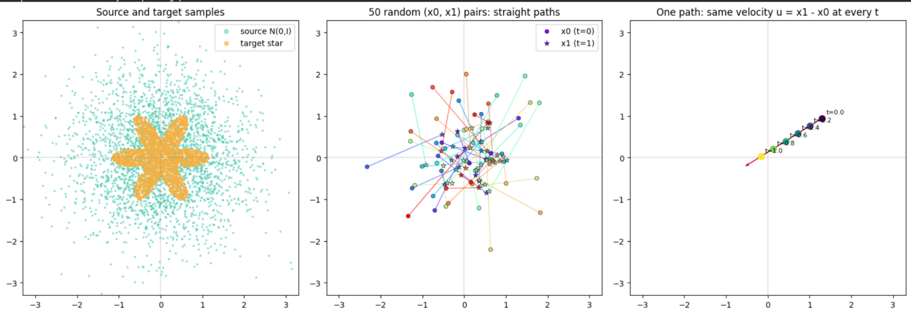
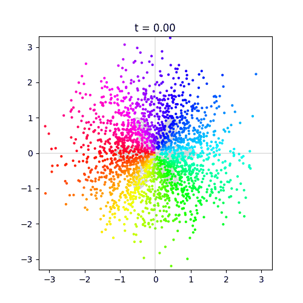
Visualization:
The figure shows (left) source and target samples together, (middle) 25 random pairs joined by straight lines with circles at x₀ and stars at x₁, and (right) a single path at t = 0, 0.2, …, 1 with the same velocity arrow at each point. In the middle panel the lines cross each other a lot. That makes sense, since the pairing is random and not optimized in any way.
Why the velocity is constant along a path. For a fixed pair, xₜ = x₀ + t(x₁ − x₀) is linear in t. Its derivative is x₁ − x₀ = u, which doesn’t depend on t. So the particle moves in a straight line at constant speed, and the velocity is set entirely by the two endpoints. I also checked this numerically by taking finite differences along one path at 11 time points. The largest difference from u was about 2 × 10⁻⁷, which is just float32 rounding.
Something worth noting: Each training path is straight, but the network only sees (xₜ, t), not which pair it came from. Lots of paths cross at the same (x, t) with different velocities, so MSE training makes the network learn their average, 𝔼[u | xₜ = x]. That averaged field is generally curved, so I expect the generated sampling paths to bend even though the training paths don’t.
Task 2:Implementing and training the velocity model
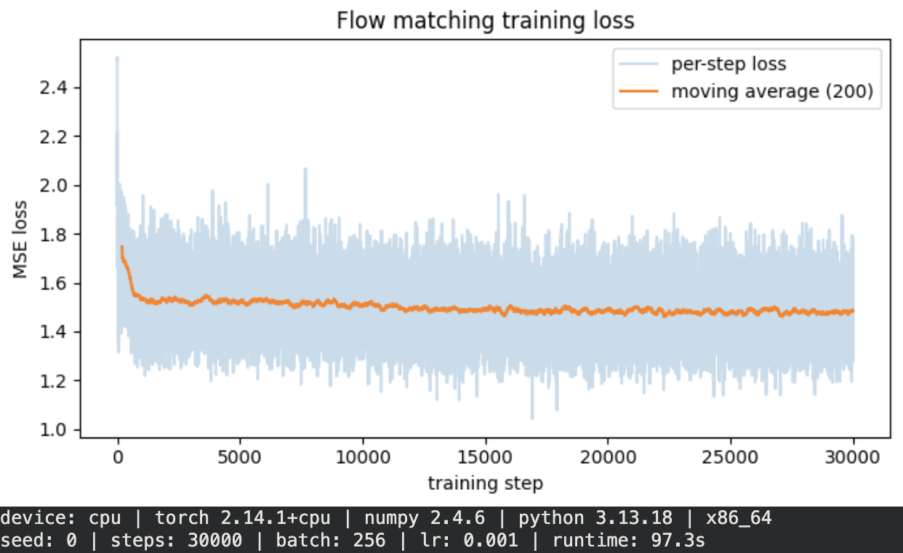
For this part I built the velocity network and trained it in PyTorch on CPU. The network takes the current point and time as a 3-vector (x, y, t) and outputs a 2D velocity. It has three hidden layers of width 128 with SiLU activations and a linear output layer, which comes to 33,794 parameters. The target endpoint is not an input.
Training pairs are built the same way as in Task 1. Each step draws 256 fresh Gaussian noise points x₀, 256 star points x₁ picked at random from a pool of 200,000 pre-sampled target points, and a random time t ∼ 𝒰(0,1) for each pair. Each row gets its interpolated point xₜ = (1−t)x₀ + tx₁ and its label u = x₁ − x₀. All 256 rows go through the network in one forward pass, and the loss is the squared L2 error per row, averaged over the batch:
𝓛 = 𝔼 ||vθ(xₜ, t) − (x₁ − x₀)||₂²
What the network predicts:
The label for a training example is the velocity of one straight path, but the network only sees (xₜ, t) and has no idea which pair produced that point. Lots of different pairs have paths through the same point at the same time, with different velocities. With MSE loss the best the network can do is predict their average, 𝔼[x₁ − x₀ | xₜ = x]. So what it ends up learning is the average direction of motion at each location and time, not any single path’s velocity. At generation time it gets only the particle’s current position and time and returns a velocity. The star’s shape is never given to it directly. It is stored in the weights, because every label contains a real star point.
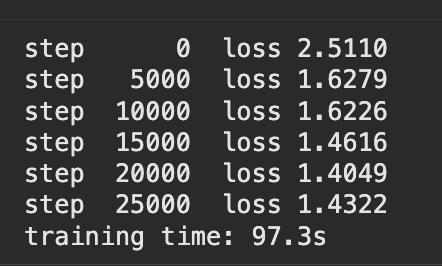
Loss curve:
The loss started at about 2.51 and dropped to roughly 1.6 by step 5,000. After that it improved slowly, reaching about 1.4 by step 20,000, and it stayed noisy from batch to batch. The starting value is what you’d expect from an untrained network that outputs roughly zero: the loss is then 𝔼||x₁ − x₀||₂², which is the source variance (2, as each of the two coordinates has variance 1.) plus the target variance (about 0.5,). I smoothed the plot with a 200-step moving average to show the trend.
Why the loss doesn’t go to zero?
The loss flattened out at around 1.4 to 1.6, far above zero, and that’s expected. Because the pairing is random, a single (xₜ, t) is consistent with many different targets u, so even a perfect network keeps an error equal to the variance of u given (xₜ, t). At t=0 that is about the target’s variance (roughly 0.5), and at t=1 it is the source’s variance (2). In between it is smaller. Averaged over t, the plateau should land somewhere around 1, so 1.4 is plausible, though I haven’t computed the exact floor. If the loss had gone near zero, I would have suspected the endpoint was leaking into the input. A plateau like this doesn’t tell me whether the learned field is good, so I’ll judge the model from the generated samples next.
Task 3:
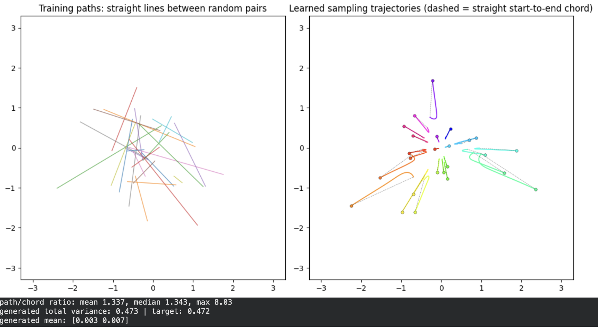
The straight interpolation paths used during training are constructed from randomly paired initial noise samples and target samples as we have a destination distribution during training. Each path provides a target velocity, (u=x₁−x₀), which the model learns to predict by minimizing the MSE loss after training on several differnet pairs. Different training paths can have different target velocities even at the same position and time. These conflicting labels contribute to the same loss, encouraging the model to learn a single compromise velocity (the conditional average under MSE).
In contrast, learned sampling trajectories are generated by starting with fresh Gaussian noise and repeatedly using the trained model's predicted velocity to update particle positions through Euler integration. Therefore, training paths are predefined straight lines, whereas sampling trajectories follow the learned time-dependent velocity field and are not necessarily straight as there is only one unique path for each (xₜ, t).
To generate points I integrated the learned ODE with forward Euler, zₖ₊₁ = zₖ + Δt vθ(zₖ, tₖ), using 120 steps (Δt = 1/120). I started from 3,000 fresh samples z₀ ∼ 𝒩(0, I) with a separate sampling seed (1). The sampler only gets the particle’s current position and the time. No endpoints are supplied, and none exist at this stage. The star’s shape reaches the sampler only through the trained weights.
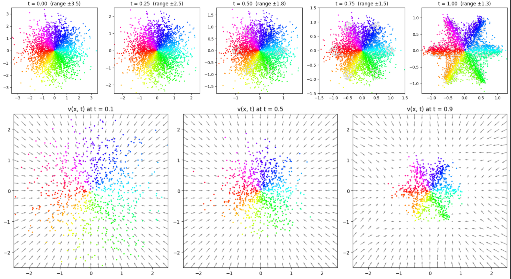
Generated clouds over time.
The particles start as a Gaussian blob at t=0. By t=0.25 and t=0.5 the cloud has contracted but still looks
like a blob, and the faint gray target underneath is mostly hidden.
The structure appears late. At t=0.75 the arms start to stick out,
and at t=1 the points form a clear star-like shape that lines up
well with the target outline. I colored each particle by the angle
of its starting position, and the color stays fixed along its path.
At t=1 the colors still form wedges, so each part of the noise cloud
ends up in a neighboring part of the star, and the flow mostly
preserves angular order. The axis range shrinks across panels
(±3.5 down to ±1.3) because the cloud contracts, so
the panels aren’t on one common scale. The ranges are in the
titles. The arms look a bit streaky, especially the ones along the
horizontal axis, and a few stray points land outside the
boundary.
Velocity field.
I evaluated the network on a 21×21 grid at t
= 0.1, 0.5, 0.9 and drew the arrows with 800 particles on top. At
all three times the arrows point mostly inward toward the center. At
t=0.1 they are fairly uniform and radial, which matches the idea
that early on the model can only say “move toward the star in
general,” since many endpoints are still possible. By t=0.9
the arrows near the star are short, since particles are almost where
they should be, and the longer arrows farther out still point
inward. The arm structure doesn’t show up clearly in the
arrows at this grid resolution, so I wouldn’t claim more than
“mostly inward, shrinking in the middle.” Arrow lengths
are autoscaled per panel, so I only compare directions across
panels. Far from the particles the model saw little data, so those
arrows shouldn’t be over-interpreted.
PART 2
Task 1:
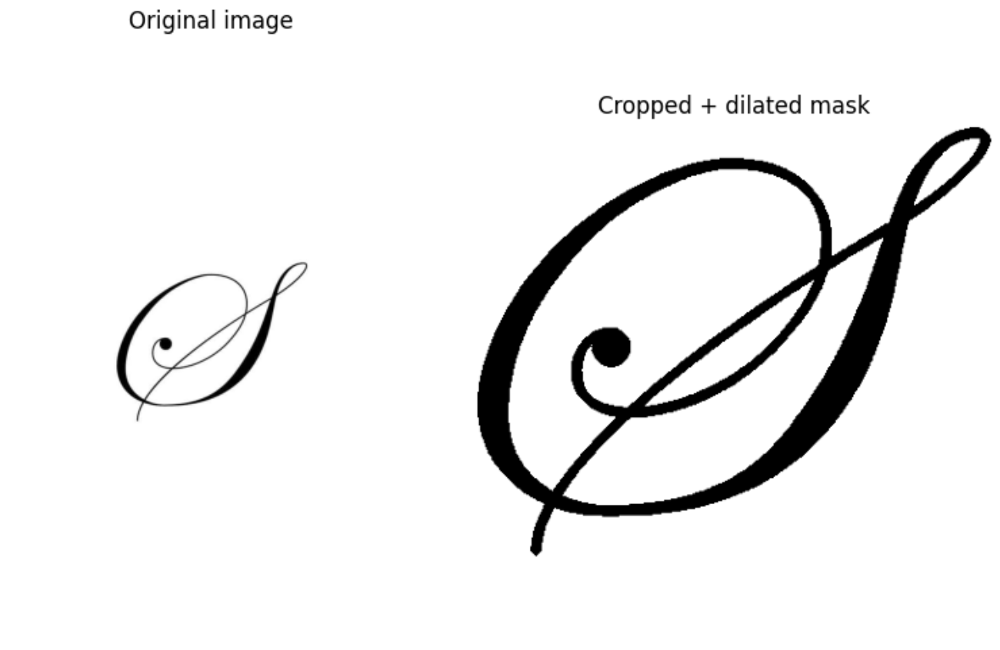
My target is a cursive capital “S” taken from a downloaded black-on-white image. I converted it to a grayscale image and thresholded it at 128 so that dark ink pixels became foreground. I cropped the mask to the letter’s bounding box with a small margin, then dilated it by 3 pixels so the very thin hairline strokes would receive enough samples. The target distribution is uniform over the foreground area: each training point is drawn by choosing a foreground pixel uniformly at random and adding uniform ±0.5 pixel jitter, so points are not locked to the pixel grid. I then centered the points, flipped the y-axis so the letter is upright, and rescaled everything to fit inside [−1, 1]². I pre-sampled a pool of 200,000 points and drew minibatches from it during training. The source distribution is a standard 2D Gaussian, and the model is trained with flow matching on linear interpolation paths.
Task 2:
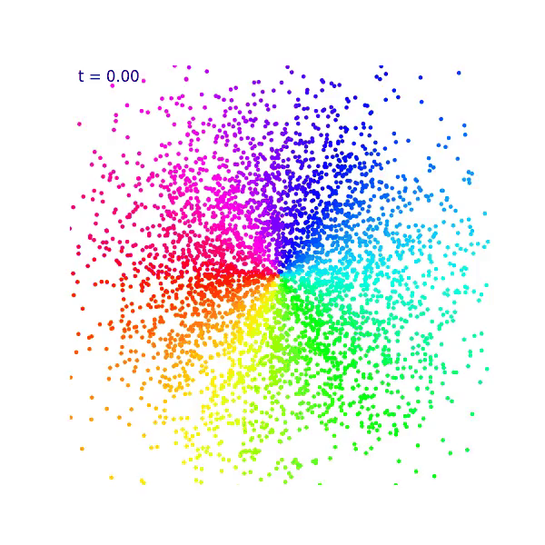
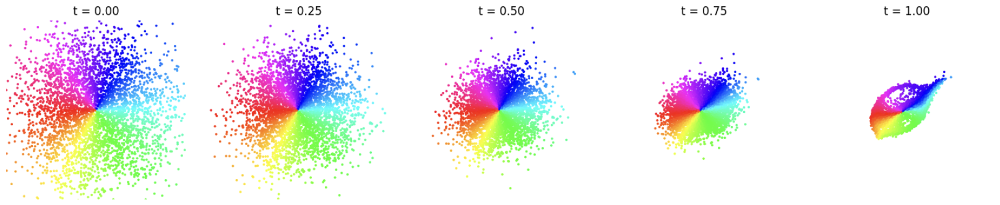
Fig : Same particles through time
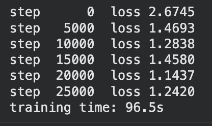
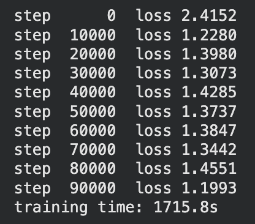
Fig: first model vs updated model
The first model, trained with the Part 1 settings, recovered the overall slant and upper loop of the S but lost the fine detail, such as the thin hairlines and the small loop near the dot. Since the target has thin, sharp features that a small MLP learns slowly, I increased the network's capacity (hidden width 128 to 256, layers 3 to 4) and trained it longer with a larger batch (30,000 to 100,000 steps, batch 256 to 512) so it could fit those details. Everything else was kept the same: the MLP structure with SiLU activations and (x, y, t) input, the flow-matching loss on linear paths from a Gaussian source, the Adam optimizer with learning rate 1e-3 and cosine decay, the 200,000-point target pool from the dilated S mask, and the same seed. This keeps the comparison focused on model capacity and training length, though because all three were changed together, I cannot say which one was responsible for the improvement.
|
Setting |
Initial model |
Upgraded model |
|
Hidden width |
128 |
256 |
|
Hidden layers |
3 |
4 |
|
Parameters |
about 33,800 |
about 198,900 |
|
Training steps |
30,000 |
100,000 |
|
Batch size |
256 |
512 |
|
Checkpoint |
flow_mlp.pt |
flow_mlp_v2.pt |
Table: changes in first model and updated model
I fixed 4,000 Gaussian noise points and integrated them with 100 Euler steps, storing every particle’s position at every step, so the same particles are tracked from noise to shape. Each particle gets a color once, at t = 0, from the angle of its starting position (hue ∝ atan2(y₀, x₀)), and keeps that color for the whole animation. Color is purely a visualization attribute. Its only purpose is to show where each region of the noise ends up.
The animation and stills at t = 0, 0.25, 0.5, 0.75, 1.0 are included. In the final frame the loop, the dot, and the long hairline are recognizable and the colors stay ordered along the strokes. Remaining flaws: some stray points inside the lower loop and near the stroke junction, and the thin tail looks thicker than in the original, which is partly a result of the dilation step.
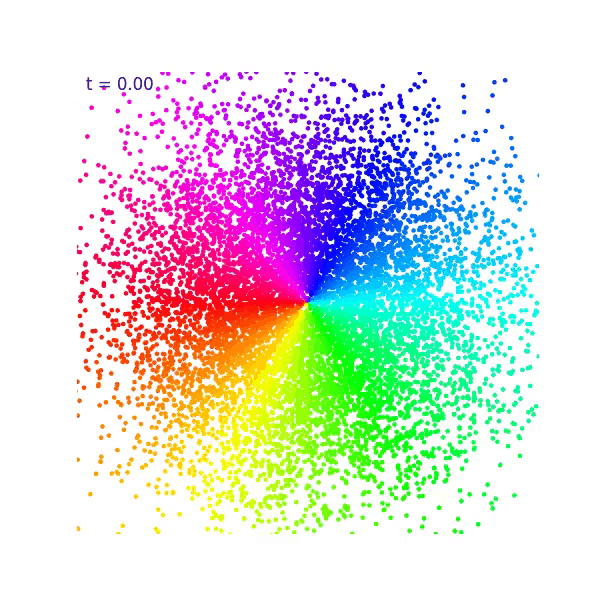
Fig: Updated model’s flow animation
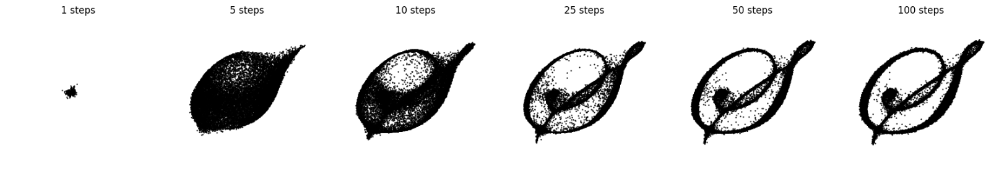
Fig: Updated model’s flow animation at time points
Task 3:
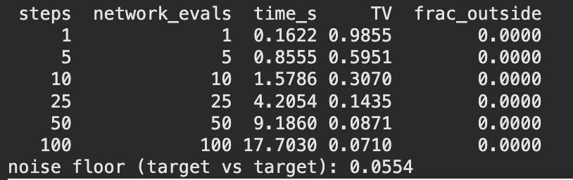
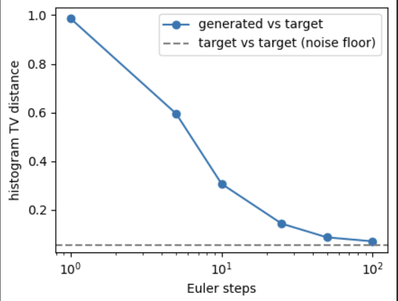
The experiment investigates how the number of Euler integration steps affects the quality and computational cost of Flow Matching generation.
The trained model weights and initial Gaussian noise samples were kept fixed across all experiments. Each run generated 20,000 particles using 1, 5, 10, 25, 50, or 100 Euler steps.
A fixed 32 × 32 histogram over [-1.2, 1.2]² was used to compare generated and target distributions. Performance was evaluated using Total Variation Distance (TVD), sampling time, and network evaluations.
The target-to-target noise floor was 0.0554. It represents the expected histogram difference between two independent samples from the same target distribution due to random sampling.
The visual results show that the generated distribution becomes progressively closer to the target as the number of Euler steps increases. With one step, the target structure is barely recognizable. At 25 steps, the overall shape becomes much clearer, while the 50-step and 100-step results look quite similar.
Discussion
The TVD decreases from 0.9855 with one step to 0.0710 with 100 steps, demonstrating that finer Euler integration substantially improves generation quality.
This improvement occurs because smaller integration steps allow the sampler to update particle positions more frequently, providing a better numerical approximation of the learned velocity field.
However, increasing the number of steps also increases computational cost. Sampling with 100 steps takes 19.57 seconds, compared with 8.94 seconds for 50 steps, while the TVD improves only from 0.0871 to 0.0710.
All experiments have a fraction outside the histogram boundaries of zero, indicating that no generated particles escaped the evaluation region.
The remaining big difference from the noise floor may be due to limitations in the learned velocity field or the histogram evaluation. Additionally, the 32 × 32 histogram may not capture fine details of the target shape.
Increasing the number of Euler steps improves the quality of Flow Matching generation, but the benefits become smaller at higher step counts. The 100-step result achieves the lowest TVD and approaches the noise floor of 0.0554.
However, 50 steps provide a reasonable balance between generation quality and computational cost. Overall, the experiment demonstrates the trade-off between numerical integration accuracy and sampling efficiency.
PART 3
Task 1 & Task 2:
The baseline’s learned paths curve because the training pairs (x₀, x₁) were matched at random: each noise point was paired with an arbitrary target point, so many straight training paths cross and the network learns the averaged, bent field that results. Reflow retrains on the baseline’s own pairs, each noise point with the endpoint the baseline actually delivered for it in the previous step. In the second step, this coupling is deterministic and non-crossing along the baseline’s flow, so the straight-line training targets should conflict less. I predict that one round of reflow will (1) lower a path-straightness measure relative to the baseline, and (2) at small step counts (1, 2, 5, 10 evaluations) give a lower histogram distance to the target than the baseline does at the same cost, while (3) at fine step counts being no worse than the baseline within the noise floor. The hypothesis fails if the reflowed model is not straighter, or if it only matches the baseline at high step counts.
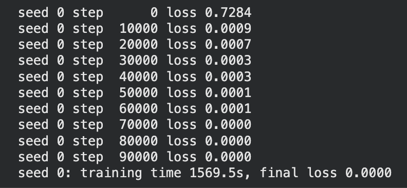
I trained a second velocity model with the same architecture as the baseline (an MLP with 4 hidden layers of 256 units, input (x, y, t), output a 2D velocity) on the 200,000 saved source-endpoint pairs from the baseline. Each training step drew a batch of 512 pairs, picked a random time t for each, formed the point on the straight line between the source and its own generated endpoint, and regressed the network’s output onto that line’s constant velocity (x₁ − x₀). I used Adam with a cosine-decayed learning rate starting at 1e-3 for 100,000 steps, matching the baseline’s settings, and training took 1,569.5 s (about 26 minutes). The loss fell from 0.7284 at step 0 to about 0.0009 at step 10,000 and below 0.0000 by the end of training. This is much lower than the baseline’s loss.
In the reflow data, each endpoint is determined by its source, so the target velocity at a given point and time is nearly unambiguous and the network can fit it closely. The loss shows only that the model fits the paired training data. It does not show that the reflow model generates good samples, that its paths are straighter, or that it works with few sampling steps, so those claims are tested separately on held-out Gaussian points.
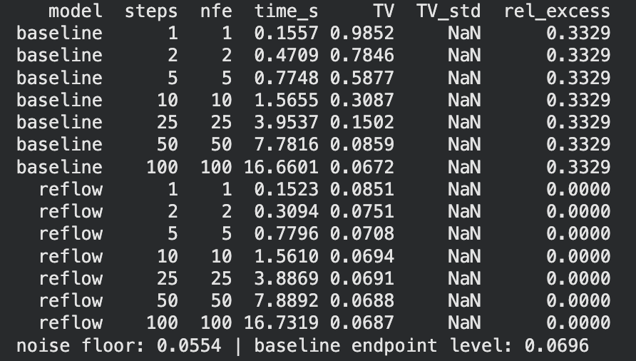
Baseline vs. reflow evaluation:
Both models were run on the same
20,000 held-out Gaussian points at 1, 2, 5, 10, 25, 50, and 100
Euler steps. For each setting I recorded the sampling time
(integration loop only), the number of network evaluations (equal to
the step count), and the total variation distance between a
32×32 histogram of the generated points and one of independent
target samples. Path straightness was measured on a common 200-step
grid as the mean path length minus the start-to-end distance,
divided by the mean start-to-end distance.
The baseline needs many steps. Its TV falls from 0.985 at 1 step to 0.309 at 10, 0.086 at 50, and 0.067 at 100, and its paths are about 33% longer than the straight line between their endpoints. The reflow model is good almost immediately: 0.085 at 1 step, 0.075 at 2, and about 0.069 from 10 steps onward. A single reflow step therefore matches the baseline at about 50 steps (0.0859), a 50-fold reduction in network evaluations, while per-step time is unchanged because the architecture is the same. Reflow paths are nearly straight, with relative excess length rounding to 0.0000. At high step counts the two models are equivalent, since the 0.0015 difference at 100 steps is smaller than the batch-to-batch variation I saw earlier (0.071 vs. 0.067 for the same baseline on different noise). Both stay about 0.014 above the noise floor of 0.0554, which is consistent with reflow inheriting the baseline’s endpoint quality (0.0696) instead of improving on it.
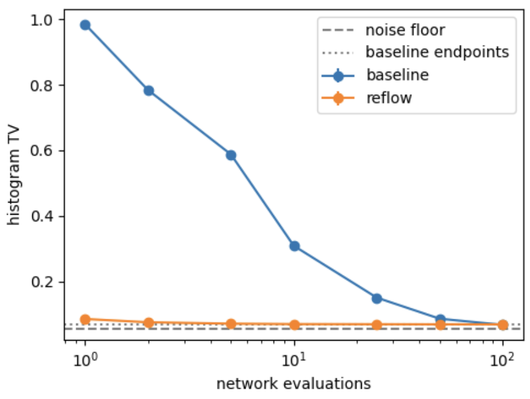
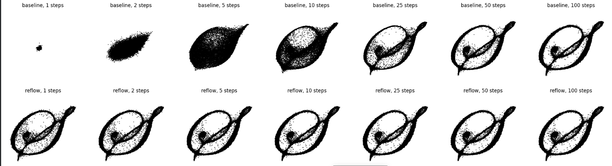
Path straightness:
I measured straightness on a common 200-step Euler grid, using the same 20,000 held-out Gaussian starting points for both models. The measure is mean trajectory length minus start-to-end distance, and I also report it divided by the mean start-to-end distance so it doesn’t depend on scale. The baseline’s curved paths are 0.226 longer than their chords(mean distance) on average, which is 33.3% longer than a chord. The reflow model’s excess is 1.24 × 10⁻⁵, or 1.8 × 10⁻⁵ relative(relative to the chord), about 18,000 times smaller. After one round of reflow, the learned paths are essentially straight. This agrees with the sampling results, where a single Euler step from the reflow model gives a recognizable S (TV 0.085) while the baseline needs about 50 steps to reach a similar score (0.086).
However, straightness does not fully explain the sample quality, for three reasons:
1. The 1-step gap remains. The reflow model’s TV at 1 step (0.085) is still above its TV at 10 steps and beyond (about 0.069), even though its paths are nearly straight. One plausible reason is that length minus chord measures only changes of direction, not changes of speed. A path can be perfectly straight and still be traversed at a non-constant speed, and a single Euler step assumes constant velocity. I haven’t tested this, so I’m treating it as a hypothesis.
2. Straight doesn’t mean correct. The reflow model learned to reproduce the baseline’s endpoints, so it also inherits the baseline’s errors. At 100 steps its TV (0.0687) matches the baseline’s (0.0672), and both stay above the noise floor (0.0554). Straighter paths made sampling cheaper without improving the final distribution.
3. Limited evidence. The result comes from a single run per model, so only the large effects (the gap in straightness and the low-step quality) are reliable.
Task 3: What the evidence suppots
Hypothesis:
I predicted that one round of reflow would:
(1) straighten the paths,
(2) improve quality at small step counts, and
(3) stay close to the baseline at fine step counts.
The results support all three. Relative path excess dropped from 33.3% to 1.8 × 10⁻⁵. At 1 step the reflow TV was 0.085, against 0.985 for the baseline, and the baseline needed about 50 steps to reach a similar score (0.086). At 100 steps the two models were equivalent (0.0687 vs. 0.0672), and the 0.0015 difference is smaller than the variation I saw between noise batches.
What this does not show:
Reflow did not improve the final distribution. Both models stay about 0.014 above the noise floor (0.0554), and the reflow model reproduces the baseline’s visible flaws (stray points inside the loop, a smeared region near the dot). This is expected, because it was trained on the baseline’s own endpoints, so it inherits the baseline’s errors. Straightness made sampling cheaper without making the samples more accurate ,not considering the extra cost for training.
Alternative explanations:
Extra training, not just straightness: The reflow model benefited from additional compute (the baseline’s training, dataset generation, and a second training run). Without a compute-matched continued baseline, I can’t separate the effect of straightening from the effect of more training.
Distillation: Reflow also acts as learning the baseline sampler’s input-to-output map directly, which would help one-step quality regardless of path geometry.
Metric limits: The 32×32 histogram can’t resolve hairline detail, and the reference samples come from the dilated mask, so thickened strokes are invisible to the score.